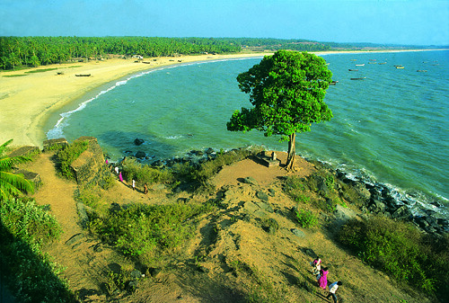
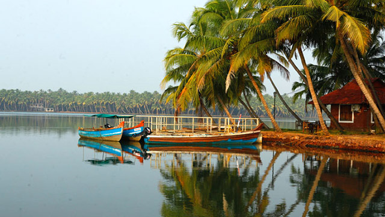

TOP DESTINATIONS
 
Kasaragod district is one of the 14 districts in the southern Indian state of Kerala. Kasaragod was a part of the South Canara district of the erstwhile Madras Presidency. It then became a part of Kannur district of Kerala. Kasaragod was declared as a district on 24 May 1984. In March 2020, Kasaragod was one of the worst affected districts in Kerala by the coronavirus pandemic.[1]
The district is bordered to the south by Kerala's Kannur district, and to the southeast and north by Karnataka's districts of Kodagu and Dakshina Kannada respectively. To the east, the district is bordered by the Western Ghats, while along the west, it is bordered by the Laccadive Sea. The district, covering an area of around 1992 km2, has a population (2011 census) of 1,307,375. It has four taluks, namely, Kasaragod, Hosdurg, Vellarikundu and Manjeshwaram Taluk. It has three municipalities: Kasaragod, Kanhangad, Nileshwaram and 38 Gram panchayats.[2]